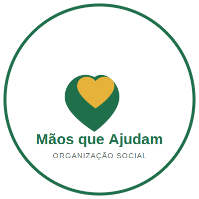

Roupas
Urgente
Campanha do Agasalho
Arrecadação de roupas de inverno para famílias carentes.

Você pode contribuir através de doações via Pix ou transferência bancária.
Participe das nossas ações voluntárias e ajude a transformar vidas na sua comunidade.
Quero ser voluntárioArrecadação de roupas de inverno para famílias carentes.
Distribuição mensal de alimentos para comunidades vulneráveis.